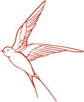
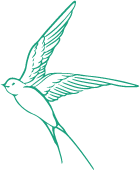

Claudio Riz
Mein Name ist Claudio, bin 34 Jahre alt und stolzer St. Galler. Früher war ich gelernter Polygraf und durfte junge Leute in ihrer Ausbildung begleiten und fand darin meine erste Berufung. Nach einigen Jahren Berufserfahrung habe ich mich entschieden, das Studium “Multimedia Production” anzugehen, um meinen Horizont in der multimedialen Welt zu erweitern.
Heute lebe ich in Chur, einer Stadt, die mich täglich mit ihrem reichen Vereinsleben und Kulturangebot inspiriert. Unser Projekt kann genau da anknüpfen und hat sich zum Ziel gesetzt, der Kulturszene von Chur neuen Schwung zu verleihen. Zusammen mit einem engagierten Team arbeite ich daran, unsere Vision in die Realität umzusetzen.
Julia Moos
Ich bin Julia, 21 Jahre jung und studiere gerade Multimedia Production an der Fachhochschule Graubünden. Zuvor habe ich eine Lehre als Polydesignerin 3D abgeschlossen und die Berufsmatur absolviert.
Ich bin ein Teil dieses Projektes, weil mir die Förderung junger, eher unbekannter Artists, sowie andere Kulturangebote sehr am Herzen liegt. Ich komme ursprünglich aus der Nähe von Winterthur. Winterthur ist bekannt dafür, dass es eine Kulturstadt ist, meine Mission in Chur ist es also nun auch Chur zu einer Art Kulturstadt werden zu lassen. Zusammen mit den anderen drei Kommiliton:innen freue ich mich, dies in die Hand zu nehmen und den Kulturaustausch zu fördern. Auch wenn es sich hierbei „nur“ um diese Webseite und die App handelt, auf welchem wir das Angebot übersichtlich, einfach und spielerisch darstellen möchten.


Claudio Riz
Mein Name ist Claudio, bin 34 Jahre alt und stolzer St. Galler. Früher war ich gelernter Polygraf und durfte junge Leute in ihrer Ausbildung begleiten und fand darin meine erste Berufung. Nach einigen Jahren Berufserfahrung habe ich mich entschieden, das Studium “Multimedia Production” anzugehen, um meinen Horizont in der multimedialen Welt zu erweitern.
Heute lebe ich in Chur, einer Stadt, die mich täglich mit ihrem reichen Vereinsleben und Kulturangebot inspiriert. Unser Projekt kann genau da anknüpfen und hat sich zum Ziel gesetzt, der Kulturszene von Chur neuen Schwung zu verleihen. Zusammen mit einem engagierten Team arbeite ich daran, unsere Vision in die Realität umzusetzen.
Max Pünter
Ich bin Max Pünter und bin kürzlich in mein 23. Lebensjahr gestartet. Nach einer abgebrochenen Matura und zwei Jahren in den USA habe ich schlussendlich eine kaufmännische Berufslehre abgeschlossen. Nach meinem Praktikum beim Organisator, vom Open-Air in Frauenfeld wurde mir klar, dass meine Zukunft im Video Produktionsbereich sein wird. Aus diesem Grund entschied ich mich nach meinem Zwischenjahr für das MMP Studium.
In meiner Heimat Zürich war ich kulturell sehr aktiv. Beim Umzug nach Chur merkte ich schnell, dass mir dieser Aspekt ein wenig fehlte. Also habe ich mich mit drei Kommilitoninnen zusammengeschlossen und wir haben uns zum Ziel gesetzt, die Übersicht über das Kulturangebot zu verbessern. Somit gründeten wir die Kulturplattform „kulturnest“. Wir haben uns für Chur hohe Ziele gesetzt, aber auch gemerkt, dass Chur grosses Potenzial hat.